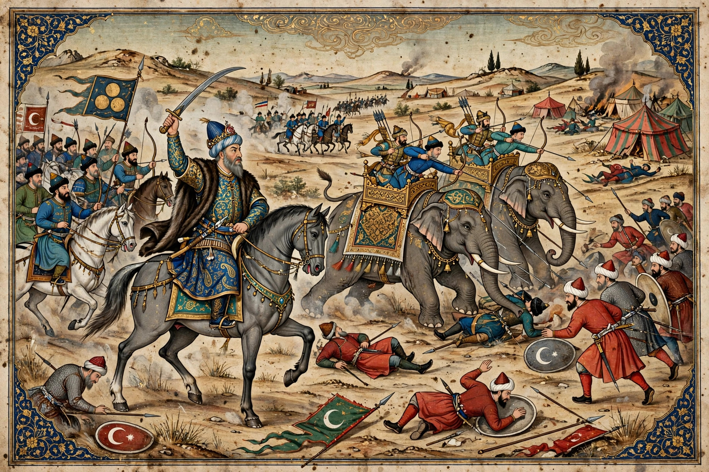

| Battle of Ankara | |
|---|---|
 | |
| Date | 20 July 1402 |
| Location | Çubuk plain, near Ankara, Anatolia |
| Result | Decisive Timurid victory; Bayezid I captured |
| Belligerents | Timurid Empire · Ottoman Sultanate |
| Commanders | Timur · Bayezid I (captured) |
| Strength | Estimates vary widely (Timur's force commonly the larger, with war elephants) |
The Battle of Ankara, fought on 20 July 1402 on the plain of Çubuk near Ankara, was a catastrophic defeat of the Ottoman Empire by the Central Asian conqueror Timur (Tamerlane). The Ottoman sultan Bayezid I — "the Thunderbolt", conqueror of much of Anatolia and the Balkans — was captured on the field and died in captivity the following year. The disaster plunged the Ottoman state into an eleven-year civil war, the Ottoman Interregnum, and delayed the Ottoman conquest of Constantinople by half a century.
Two expansionist empires collided in Anatolia. Bayezid had absorbed the Turkish beyliks of Anatolia, several of whose dispossessed rulers took refuge at Timur's court; Timur, fresh from campaigns in Persia, India, and Syria, demanded Bayezid's submission, while Bayezid sheltered Timur's enemies in turn. Insulting letters passed between the two rulers. In the summer of 1402 Timur marched into Anatolia, bypassed Ankara's citadel, and positioned his army astride the water sources of the Çubuk plain, forcing Bayezid — whose army had marched hard in the July heat — to attack a rested enemy while his own men suffered from thirst.
Bayezid's army included Janissaries and his household cavalry at the centre, Serbian heavy cavalry under his brother-in-law Stefan Lazarević on one wing, and contingents of recently subjugated Anatolian Turks and Tatar auxiliaries on the other. Timur's larger force included war elephants brought from India. As the battle developed, the Anatolian contingents — recognising their own exiled beys in Timur's camp — deserted to him, and the Tatar auxiliaries also defected, leaving Bayezid's flanks exposed. The Janissaries and Serbian knights fought on around the sultan on a hill until evening, when Bayezid attempted to break out; his horse fell and he was captured. Timur treated his prisoner with a courtesy chroniclers have variously described, but Bayezid died at Akşehir in March 1403.
Timur restored the Anatolian beyliks, raided westward as far as Smyrna (which he stormed from the Knights Hospitaller), and then withdrew east, dying in 1405 on his way to invade China. Bayezid's sons fought the eleven-year Ottoman Interregnum until Mehmed I reunified the sultanate in 1413. The reprieve granted to Byzantium by the battle — Constantinople had been under Ottoman blockade and close to surrender — extended the empire's life until 1453. The capture of a reigning sultan in battle remains unique in Ottoman history.
See also: Timur · Bayezid I · Ottoman Interregnum · Battle of Chaldiran